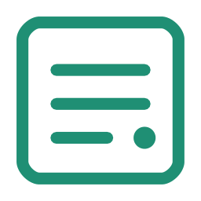
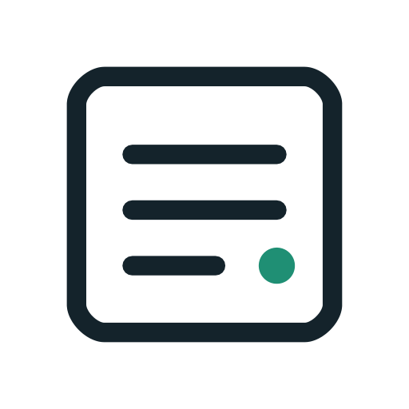
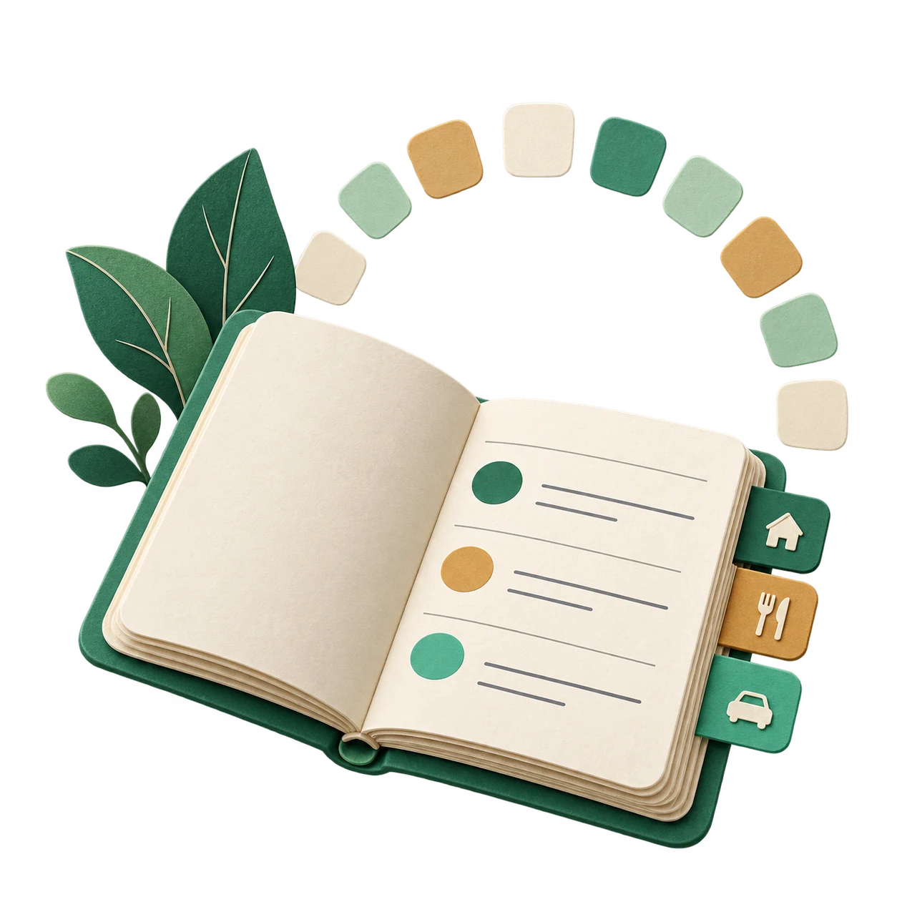
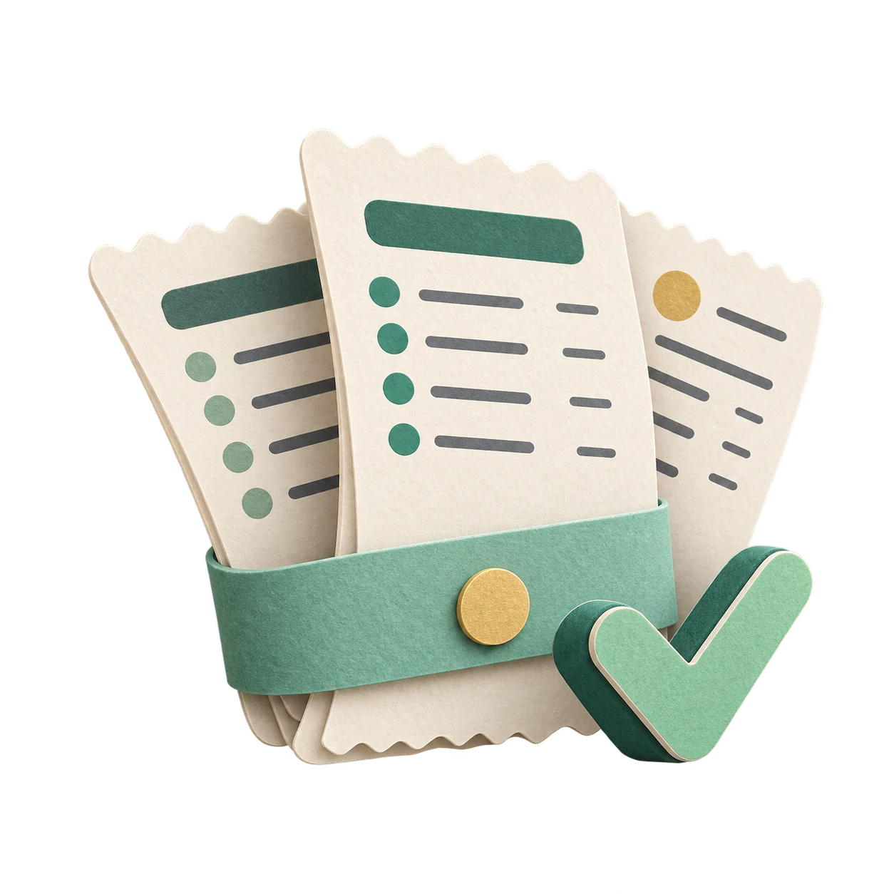
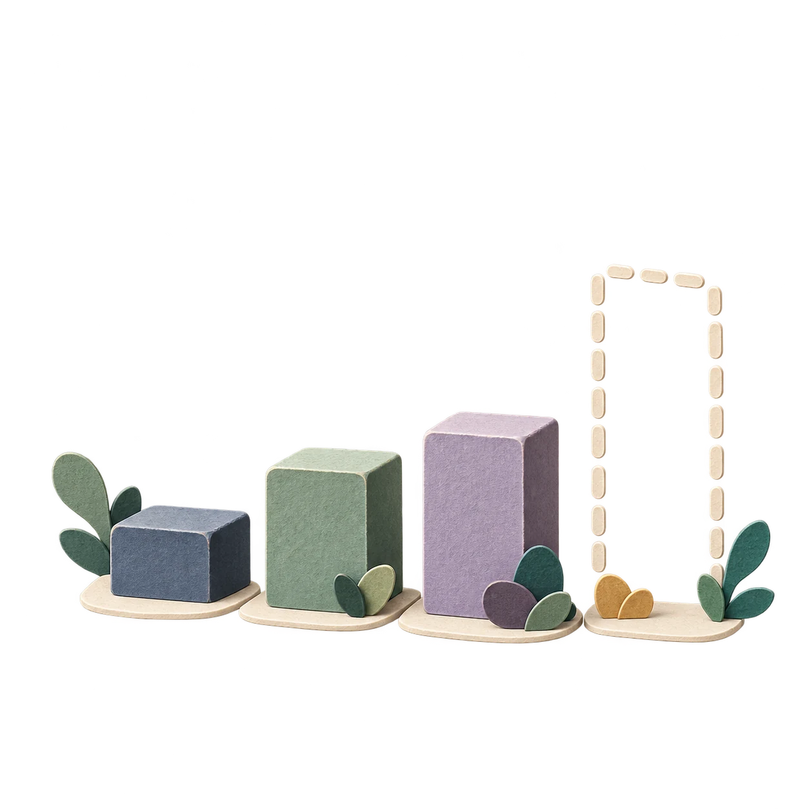
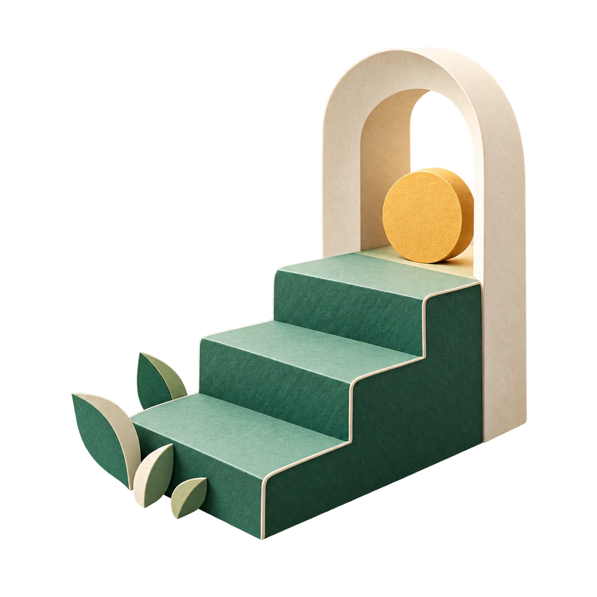
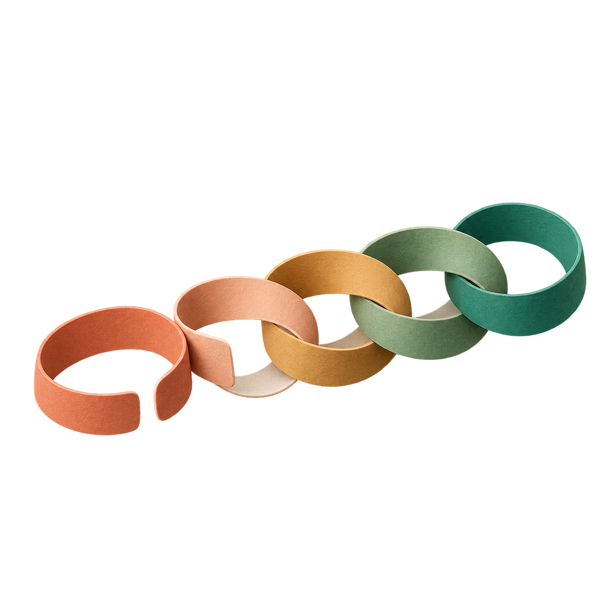
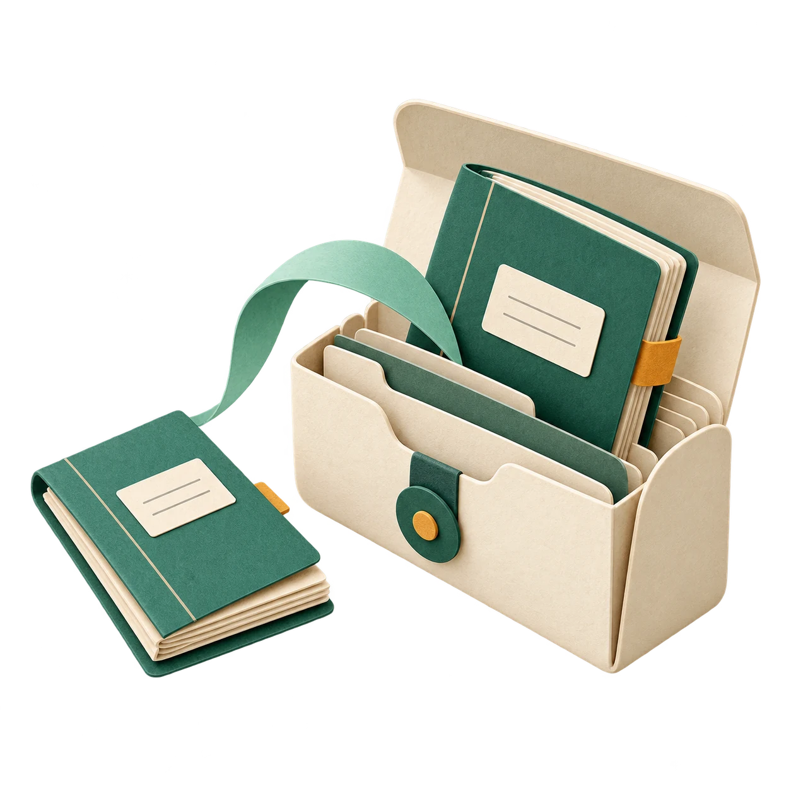

A month, all in order


Description and prompt
An open paper ledger surrounded by a calm monthly arc and three organised expense tabs.
Use case: illustration-story. Create a finished ORIGINAL transparent-background illustration for Monthly Ledger, a private offline personal monthly fixed-expense app. Square 1024x1024, subject fits within central 78 percent, genuine alpha transparency outside the artwork, no coloured background panel, no square tile. Art direction: sophisticated tactile miniature sculptures made of folded and layered matte paper, gently rounded edges, subtle realistic paper grain, softly lit three-quarter view, almost no cast shadow outside objects. Palette warm ivory #F6F1E6, forest/emerald #1F8F74 and #3FBF9C, ink/slate #4F5B64, restrained ochre; use intermediate tones and visible pale edges so the object reads on both light cream and deep blue. Crisp simple silhouette, few objects, useful at small mobile UI sizes. No words, letters, digits, currency signs, logos, watermark, gradients filling the canvas, fake UI, financial performance claims, bank connections, cloud, padlocks or sensitive real data. Each scene must have its own distinct arrangement and subject. Scene: An elegant open ledger constructed from warm paper, three simple ruled rows on one page and three separate small coloured category tabs standing alongside; a loose incomplete arc of twelve small rounded paper tiles behind it suggests a monthly rhythm without any numbers. The hero is the ledger, organised and reassuring. Asymmetric spacious arrangement, no bank or money pile.
The first item


Description and prompt
A blank open ledger with a single green bookmark ready for its first entry.
Use case: illustration-story. Create a finished ORIGINAL transparent-background illustration for Monthly Ledger, a private offline personal monthly fixed-expense app. Square 1024x1024, subject fits within central 78 percent, genuine alpha transparency outside the artwork, no coloured background panel, no square tile. Art direction: sophisticated tactile miniature sculptures made of folded and layered matte paper, gently rounded edges, subtle realistic paper grain, softly lit three-quarter view, almost no cast shadow outside objects. Palette warm ivory #F6F1E6, forest/emerald #1F8F74 and #3FBF9C, ink/slate #4F5B64, restrained ochre; use intermediate tones and visible pale edges so the object reads on both light cream and deep blue. Crisp simple silhouette, few objects, useful at small mobile UI sizes. No words, letters, digits, currency signs, logos, watermark, gradients filling the canvas, fake UI, financial performance claims, bank connections, cloud, padlocks or sensitive real data. Each scene must have its own distinct arrangement and subject. Scene: A small OPEN BLANK ledger, an inviting mint-green ribbon bookmark making one soft loop above the page, and a single upright paper tab ready to be inserted. No ruled list of fake entries, no checklist checkmarks because nothing has been added. Simple intimate three-object composition, clear silhouette at 200 pixels, warm cream paper edges and forest-green ribbon.

All paid


Description and prompt
A neat stack of ledger slips held by a green band with one modest confirmation tick.
Use case: illustration-story. Create a finished ORIGINAL transparent-background illustration for Monthly Ledger, a private offline personal monthly fixed-expense app. Square 1024x1024, subject fits within central 78 percent, genuine alpha transparency outside the artwork, no coloured background panel, no square tile. Art direction: sophisticated tactile miniature sculptures made of folded and layered matte paper, gently rounded edges, subtle realistic paper grain, softly lit three-quarter view, almost no cast shadow outside objects. Palette warm ivory #F6F1E6, forest/emerald #1F8F74 and #3FBF9C, ink/slate #4F5B64, restrained ochre; use intermediate tones and visible pale edges so the object reads on both light cream and deep blue. Crisp simple silhouette, few objects, useful at small mobile UI sizes. No words, letters, digits, currency signs, logos, watermark, gradients filling the canvas, fake UI, financial performance claims, bank connections, cloud, padlocks or sensitive real data. Each scene must have its own distinct arrangement and subject. Scene: A satisfyingly neat fan of THREE paper ledger slips, gathered gently by a mint-green band, one small sculptural green tick standing in front and a single golden circular accent. Calm completion and relief, no confetti, fireworks, trophy or financial wealth promise. Compact horizontal arrangement, tactile thick paper and restrained green.
Nothing due soon


Description and prompt
A clear unnumbered calendar beside a smooth paper path with no obstacles.
Use case: illustration-story. Create a finished ORIGINAL transparent-background illustration for Monthly Ledger, a private offline personal monthly fixed-expense app. Square 1024x1024, subject fits within central 78 percent, genuine alpha transparency outside the artwork, no coloured background panel, no square tile. Art direction: sophisticated tactile miniature sculptures made of folded and layered matte paper, gently rounded edges, subtle realistic paper grain, softly lit three-quarter view, almost no cast shadow outside objects. Palette warm ivory #F6F1E6, forest/emerald #1F8F74 and #3FBF9C, ink/slate #4F5B64, restrained ochre; use intermediate tones and visible pale edges so the object reads on both light cream and deep blue. Crisp simple silhouette, few objects, useful at small mobile UI sizes. No words, letters, digits, currency signs, logos, watermark, gradients filling the canvas, fake UI, financial performance claims, bank connections, cloud, padlocks or sensitive real data. Each scene must have its own distinct arrangement and subject. Scene: One small freestanding blank desk-calendar leaf made entirely of folded paper, no digits and no dated squares, with an airy pale-green paper path curving into open space next to it. Two tiny smooth pebble-like paper shapes provide balance. The concept is an empty upcoming window, calm breathing space, not that all payments are paid. Minimal low relief, soft mint and warm grey.

The data is starting


Description and prompt
A few low paper tiles begin an unfinished series, leaving space for more monthly data.
Use case: illustration-story. Create a finished ORIGINAL transparent-background illustration for Monthly Ledger, a private offline personal monthly fixed-expense app. Square 1024x1024, subject fits within central 78 percent, genuine alpha transparency outside the artwork, no coloured background panel, no square tile. Art direction: sophisticated tactile miniature sculptures made of folded and layered matte paper, gently rounded edges, subtle realistic paper grain, softly lit three-quarter view, almost no cast shadow outside objects. Palette warm ivory #F6F1E6, forest/emerald #1F8F74 and #3FBF9C, ink/slate #4F5B64, restrained ochre; use intermediate tones and visible pale edges so the object reads on both light cream and deep blue. Crisp simple silhouette, few objects, useful at small mobile UI sizes. No words, letters, digits, currency signs, logos, watermark, gradients filling the canvas, fake UI, financial performance claims, bank connections, cloud, padlocks or sensitive real data. Each scene must have its own distinct arrangement and subject. Scene: Four small sculptural paper tiles arranged like the beginning of a monthly bar series, all LOW and deliberately unfinished, followed by a loose empty outlined paper frame. Slate blue, sage and a small muted violet tile. No upward growth curve or high winning bar; this is insufficient history and data beginning to form. Beautiful quiet miniature architectural composition, no axis, digits or fake values.

A step towards the goal


Description and prompt
Small folded green steps lead towards an open paper arch and one gold disc.
Use case: illustration-story. Create a finished ORIGINAL transparent-background illustration for Monthly Ledger, a private offline personal monthly fixed-expense app. Square 1024x1024, subject fits within central 78 percent, genuine alpha transparency outside the artwork, no coloured background panel, no square tile. Art direction: sophisticated tactile miniature sculptures made of folded and layered matte paper, gently rounded edges, subtle realistic paper grain, softly lit three-quarter view, almost no cast shadow outside objects. Palette warm ivory #F6F1E6, forest/emerald #1F8F74 and #3FBF9C, ink/slate #4F5B64, restrained ochre; use intermediate tones and visible pale edges so the object reads on both light cream and deep blue. Crisp simple silhouette, few objects, useful at small mobile UI sizes. No words, letters, digits, currency signs, logos, watermark, gradients filling the canvas, fake UI, financial performance claims, bank connections, cloud, padlocks or sensitive real data. Each scene must have its own distinct arrangement and subject. Scene: A short stairway of thick folded sage-green paper with three modest steps rising towards a small open cream paper arch, a single warm ochre disc resting just inside the arch. A few tiny paper folds at the base imply gradual contributions. Aspirational but modest savings goal, not an investment or guaranteed return. Side three-quarter view with a clear walkable visual path.

One instalment at a time


Description and prompt
A short chain of folded paper loops becomes a neatly arranged set of separate rings.
Use case: illustration-story. Create a finished ORIGINAL transparent-background illustration for Monthly Ledger, a private offline personal monthly fixed-expense app. Square 1024x1024, subject fits within central 78 percent, genuine alpha transparency outside the artwork, no coloured background panel, no square tile. Art direction: sophisticated tactile miniature sculptures made of folded and layered matte paper, gently rounded edges, subtle realistic paper grain, softly lit three-quarter view, almost no cast shadow outside objects. Palette warm ivory #F6F1E6, forest/emerald #1F8F74 and #3FBF9C, ink/slate #4F5B64, restrained ochre; use intermediate tones and visible pale edges so the object reads on both light cream and deep blue. Crisp simple silhouette, few objects, useful at small mobile UI sizes. No words, letters, digits, currency signs, logos, watermark, gradients filling the canvas, fake UI, financial performance claims, bank connections, cloud, padlocks or sensitive real data. Each scene must have its own distinct arrangement and subject. Scene: A short chain of five soft rounded paper loops lying horizontally; at one end two loops are gently opened and laid neatly apart, not broken violently. Warm muted terracotta loops transition to a green end loop, subtle progress through instalments. No handcuffs, chains of metal, scissors, money, percentages or promise of automatic debt cancellation. Calm craft sculpture, recognisable simple shapes.

A copy to keep


Description and prompt
A small ledger is placed inside an open portable archive case with a folded corner tab.
Use case: illustration-story. Create a finished ORIGINAL transparent-background illustration for Monthly Ledger, a private offline personal monthly fixed-expense app. Square 1024x1024, subject fits within central 78 percent, genuine alpha transparency outside the artwork, no coloured background panel, no square tile. Art direction: sophisticated tactile miniature sculptures made of folded and layered matte paper, gently rounded edges, subtle realistic paper grain, softly lit three-quarter view, almost no cast shadow outside objects. Palette warm ivory #F6F1E6, forest/emerald #1F8F74 and #3FBF9C, ink/slate #4F5B64, restrained ochre; use intermediate tones and visible pale edges so the object reads on both light cream and deep blue. Crisp simple silhouette, few objects, useful at small mobile UI sizes. No words, letters, digits, currency signs, logos, watermark, gradients filling the canvas, fake UI, financial performance claims, bank connections, cloud, padlocks or sensitive real data. Each scene must have its own distinct arrangement and subject. Scene: A miniature open cream archival CASE, shaped like a portable file wallet rather than a cloud, receives a small green-bound paper ledger that is halfway tucked inside. An extra folded slip remains beside the original ledger footprint, suggesting a copy to keep. Clear outgoing movement using one curved paper ribbon, not a UI arrow or sync icon. Tactile paper, forest-green closure, discreet ochre tab, local personal storage.
Getting the ledger back


Description and prompt
Ledger pages unfold from an archive case and settle into an open book.
Use case: illustration-story. Create a finished ORIGINAL transparent-background illustration for Monthly Ledger, a private offline personal monthly fixed-expense app. Square 1024x1024, subject fits within central 78 percent, genuine alpha transparency outside the artwork, no coloured background panel, no square tile. Art direction: sophisticated tactile miniature sculptures made of folded and layered matte paper, gently rounded edges, subtle realistic paper grain, softly lit three-quarter view, almost no cast shadow outside objects. Palette warm ivory #F6F1E6, forest/emerald #1F8F74 and #3FBF9C, ink/slate #4F5B64, restrained ochre; use intermediate tones and visible pale edges so the object reads on both light cream and deep blue. Crisp simple silhouette, few objects, useful at small mobile UI sizes. No words, letters, digits, currency signs, logos, watermark, gradients filling the canvas, fake UI, financial performance claims, bank connections, cloud, padlocks or sensitive real data. Each scene must have its own distinct arrangement and subject. Scene: A small closed archive wallet at left, its green tab open, releases three cream paper leaves through an airy curved fan into an open ledger at right. The story reads LEFT TO RIGHT as restoring saved pages into a usable book. Distinct composition from export, no cloud, wireless links, security shield, arrows, device, claims of guaranteed recovery. Pale teal and cream, one understated blue-grey edge.
A gentle reminder


Description and prompt
A folded paper bell leans gently towards a single due-date card.
Use case: illustration-story. Create a finished ORIGINAL transparent-background illustration for Monthly Ledger, a private offline personal monthly fixed-expense app. Square 1024x1024, subject fits within central 78 percent, genuine alpha transparency outside the artwork, no coloured background panel, no square tile. Art direction: sophisticated tactile miniature sculptures made of folded and layered matte paper, gently rounded edges, subtle realistic paper grain, softly lit three-quarter view, almost no cast shadow outside objects. Palette warm ivory #F6F1E6, forest/emerald #1F8F74 and #3FBF9C, ink/slate #4F5B64, restrained ochre; use intermediate tones and visible pale edges so the object reads on both light cream and deep blue. Crisp simple silhouette, few objects, useful at small mobile UI sizes. No words, letters, digits, currency signs, logos, watermark, gradients filling the canvas, fake UI, financial performance claims, bank connections, cloud, padlocks or sensitive real data. Each scene must have its own distinct arrangement and subject. Scene: A sculptural folded-paper BELL in muted ochre, beside one cream ledger slip with a small green folded corner, with two short curved paper strips suggesting a gentle chime. No alarm clock, no red danger badge, no numbered calendar, no text or phone mockup. A friendly discreet local reminder, compact asymmetrical arrangement and beautiful recognisable silhouette.